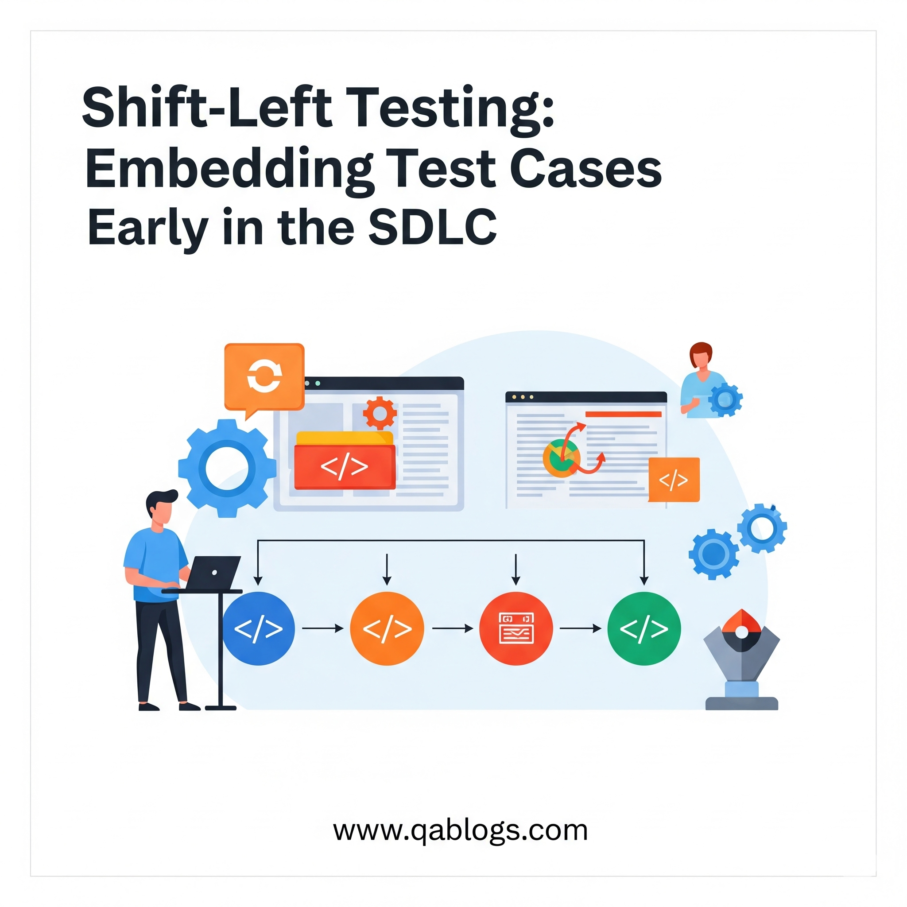

Shift-Left Testing: Embedding Test Cases Early in the SDLC

Key Takeaways
- Learn how to implement shift-left testing in your SDLC
- Discover practical strategies for early test case embedding
- Explore real-world applications and best practices
- Understand the challenges and solutions in modern testing
In the fast-paced world of software development, delivering high-quality applications quickly is more critical than ever in 2025. Shift-left testing, a methodology that embeds testing earlier in the Software Development Life Cycle (SDLC), has become a cornerstone for QA teams aiming to achieve this balance. By integrating test cases during the initial stages of development, shift-left testing ensures defects are caught early, reducing costs and accelerating delivery. This blog on QA Blogs dives into the concept of shift-left testing, its benefits, challenges, and practical steps for embedding test cases early in the SDLC—all while optimizing for SEO to reach QA professionals seeking modern testing strategies.
What is Shift-Left Testing?
Shift-left testing is a QA approach that moves testing activities earlier in the SDLC, from the traditional end-of-cycle phase to the requirements, design, and coding stages. Instead of waiting until development is complete, QA teams collaborate with stakeholders from the start to identify and address issues proactively.
Traditional Testing: Testing occurs after coding, often leading to late defect discovery and costly fixes.
Shift-Left Testing: Testing begins during requirements analysis and continues through development, embedding quality throughout the process.
In 2025, with Agile and DevOps dominating software development, shift-left testing aligns perfectly with the need for rapid, iterative releases while maintaining quality.
Why Shift-Left Testing Matters in 2025
The shift-left approach is gaining traction across industries in 2025 due to several key drivers:
1. Faster Release Cycles
Agile and DevOps practices have shortened release cycles, with many teams aiming for weekly or even daily deployments. A 2025 Forrester report notes that 68% of organizations now follow Agile methodologies, emphasizing speed without sacrificing quality.
Impact: Shift-left testing ensures defects are caught early, preventing delays in tight sprint schedules.
2. Rising Costs of Late-Stage Defects
The later a defect is found in the SDLC, the more expensive it is to fix. A 2025 Capgemini study estimates that defects found post-release can cost up to 5x more to resolve than those identified during development.
Impact: Embedding test cases early reduces rework, saving time and resources.
3. Increased Focus on Security and Compliance
With cyber threats on the rise and regulations like GDPR and CCPA tightening, security and compliance are top priorities. Shift-left testing integrates security checks early, addressing vulnerabilities before they become critical.
Impact: Early testing ensures applications meet regulatory standards, avoiding fines and breaches.
4. Complex System Architectures
Modern applications often rely on microservices, cloud infrastructure, and third-party integrations, increasing the risk of integration failures.
Impact: Shift-left testing validates components and integrations during development, ensuring seamless functionality.
Benefits of Embedding Test Cases Early in the SDLC
Embedding test cases early through shift-left testing offers significant advantages for QA teams in 2025:
- Early Defect Detection: Identifying issues during requirements or coding phases reduces the cost and effort of fixing them later.
- Improved Collaboration: QA teams work closely with developers and product owners, fostering a shared responsibility for quality.
- Enhanced Security: Early security testing catches vulnerabilities, critical in industries like finance and healthcare.
- Faster Time-to-Market: Fewer late-stage defects mean smoother releases, aligning with Agile/DevOps timelines.
- Better Quality: Continuous testing throughout the SDLC ensures the final product meets user expectations and requirements.
Challenges of Shift-Left Testing
While the benefits are clear, adopting shift-left testing can present challenges for QA teams:
- Cultural Resistance: Teams used to traditional workflows may resist moving QA earlier, requiring a mindset shift.
- Skill Gaps: QAs need to learn new tools (e.g., static code analysis) and collaborate more with developers, which can be daunting.
- Time Investment: Creating test cases early requires more upfront effort, potentially slowing down initial phases.
- Tool Integration: Incorporating testing tools into early SDLC stages can be complex, especially in legacy systems.
How to Embed Test Cases Early in the SDLC with Shift-Left Testing
Here's a step-by-step guide for QA teams to implement shift-left testing by embedding test cases early in the SDLC:
1. Engage in Requirements Analysis
Start testing during the requirements phase by creating test cases based on user stories and acceptance criteria.
How to Do It: Review requirements with product owners and developers, identifying ambiguities or gaps.
Example Test Case: For a login feature, create a test case: Input: Username "testuser," Password "pass123"; Expected Output: User logs in successfully.
Tool: Use Jira to document requirements and link test cases to user stories.
2. Collaborate with Developers During Design
Work with developers to design test cases that validate the system architecture and design decisions.
How to Do It: Participate in design reviews, suggesting test scenarios for critical components.
Example Test Case: For a payment API, test the design: Input: Valid API request; Expected Output: API returns a 200 status code with transaction details.
Tool: Use Confluence to collaborate on design documents and test scenarios.
3. Use Static Code Analysis for Early Validation
Static code analysis tools scan code for defects and vulnerabilities as it's written, aligning with shift-left principles.
Tools to Try: SonarQube for code quality, Checkmarx for security vulnerabilities.
How to Start: Integrate SonarQube into your CI/CD pipeline to scan code during development, flagging issues like null pointer exceptions.
Benefit: Catches bugs before they're integrated, reducing manual testing effort.
4. Automate Unit and Component Testing
Automate tests at the unit and component level to provide immediate feedback to developers.
Tools to Try: JUnit for unit testing, Postman for API testing.
How to Start: Write JUnit tests for core functions (e.g., a calculation module) as developers code them.
Example Test Case: Input: Calculate interest with principal $1000, rate 5%, time 1 year; Expected Output: Interest = $50.
Benefit: Ensures individual components work correctly before integration.
5. Test Integrations Early
Validate integrations between components (e.g., APIs, microservices) during development to catch issues early.
How to Do It: Use API testing tools to verify contracts and functionality as components are built.
Example Test Case: Input: API request to transfer funds; Expected Output: Funds are transferred, and a confirmation is returned.
Tool: Postman or RestAssured for API testing.
6. Incorporate Security Testing from the Start
Embed security test cases early to address vulnerabilities, especially in high-stakes industries.
Tools to Try: OWASP ZAP for vulnerability scanning, Snyk for dependency checks.
Example Test Case: Input: Malicious input (e.g., SQL injection attempt); Expected Output: System rejects the input and logs the attempt.
Benefit: Ensures applications are secure from the ground up, reducing compliance risks.
7. Integrate with CI/CD Pipelines
Automate test execution within CI/CD pipelines to ensure continuous validation throughout the SDLC.
Tools to Try: Jenkins or GitHub Actions for CI/CD, Newman for running Postman tests.
How to Start: Configure Jenkins to run unit and API tests automatically with every code commit.
Benefit: Provides real-time feedback, catching issues as they arise.
8. Start Small and Scale Gradually
If your team is new to shift-left, begin with a small project to build confidence and refine your process.
How to Start: Choose a single feature (e.g., a login module) and apply shift-left practices, then expand to larger projects.
Benefit: Minimizes disruption while allowing your team to learn and adapt.
Real-World Applications of Shift-Left Testing
Shift-left testing is making a significant impact across industries in 2025:
- Financial Services: A banking app used shift-left to test a new payment feature during development, catching a security flaw in the API that could have violated PCI DSS compliance.
- E-commerce: An online retailer embedded test cases early to validate a checkout microservice, reducing cart abandonment by ensuring seamless performance.
- Healthcare: A telehealth platform applied shift-left to test patient data integrations, ensuring HIPAA compliance from the design phase.
How Shift-Left Testing Aligns with 2025 Trends
Shift-left testing complements other QA trends in 2025, enhancing its effectiveness:
- DevSecOps: Embeds security testing early, aligning with the "Sec" in DevSecOps.
- AI-Driven Testing: AI tools can predict defects during coding, supporting shift-left by prioritizing test cases.
- SRE Integration: Pairs with Site Reliability Engineering by ensuring reliability starts early in the SDLC.
FAQs
What is shift-left testing?
Shift-left testing moves QA processes earlier in the SDLC, starting during requirements and coding to catch defects early.
Why is embedding test cases early important?
It reduces costs by catching defects before they escalate, improves collaboration, and ensures quality throughout the SDLC.
What tools support shift-left testing?
Tools like SonarQube (static code analysis), JUnit (unit testing), Postman (API testing), and Jenkins (CI/CD) are ideal.
How can QAs overcome challenges in shift-left testing?
Start small, train the team on new tools, and foster collaboration with developers to build buy-in and confidence.
Conclusion
Shift-left testing is revolutionizing QA in 2025 by embedding test cases early in the SDLC, ensuring defects are caught before they derail projects. By collaborating with developers, leveraging tools like SonarQube and Postman, and integrating with CI/CD pipelines, QA teams can deliver high-quality software faster and more efficiently. As software development continues to evolve, adopting shift-left testing will position your team to meet modern demands with confidence. Start small, experiment with early test case design, and watch your QA process transform.
Ready to embed shift-left testing in your SDLC? Share your experiences in the comments, and explore more QA insights on QA Blogs!
Join Our Community of QA Professionals
Get exclusive access to in-depth articles, testing strategies, and industry insights. Stay ahead of the curve with our expert-curated content delivered straight to your inbox.
Nikunj Mistri
Founder, QA Blogs
About the Author